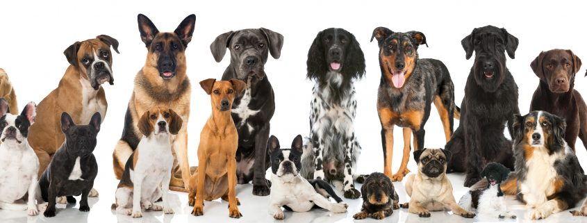

BE THE VOICE OF THE ANIMALS
Experience the Amazon and help us to protect the forest and its animals.
- The work is physically and emotionally demanding, but extremely rewarding.
- Volunteers work 5 days a week (7am to 4pm) and have 2 days off.
- The cost of volunteering is USD 350/month, which covers food, accommodation and recreational activities.
- The minimum volunteering period is 4 weeks.
- We evaluate all requests as they arrive and we communicate our decision within a week. If you are accepted,
the next step will be to reserve your place paying the first month's volunteering fee (350 USD
non-refundable).
- For more information, do not hesitate to write to: our
mail
TO KEEP EVERYONE SAFE WE ARE WORKING WITH BIOSAFETY RULES
ANIMAL SHELTER SUMMARY
Six and a half million domestic animals enter shelters in the United States each year —
3.3 million dogs and 3.2 million cats. Just over half of animals in shelters are adopted annually — around 3.2
million — and 1.5 million are euthanized. Of animals admitted into shelters, approximately 700,000 are
eventually returned to their original homes, most of which are dogs.1 Around a third of all dogs taken into
homes each year are purchased from a breeder, and just under a quarter of dogs are purchased from shelters. The
remainder are purchased from friends, another party or are discovered as strays.
ANIMAL SHELTERS NEWS
- Video Shows Los Angeles Animal Shelter Overrun by Pack of Rats -
PUNCH NEWS
Newsweek | 28 September 2021
- 98 dogs, cats at Detroit animal shelter find homes amid overcrowding -
The Detroit News
The Detroit News | 28 September 2021
- Local Animal Rescue Center Looking for Votes to Win $12,000 Grant -
WEVV NEWS
WEVV | 27 September 2021
- Guilford County set to open replacement for animal shelter: Why it offers so much more! -
WGHP FOX 8 Greensboro NEWS
WGHP FOX 8 Greensboro | 28 September 2021
- Clear the Shelters 2021 Campaign Helps 136000 Pets Find Forever Homes -
Pet Age news
Pet Age | 27 September 2021
HOW TO
GET INVOLVED
- Kindly View Animal Shelters issue around the world.
- Make donations to people in need of help.
- View Animal Shelters needs
- and learn how you can help make the difference.


EXPLORE OUR GALLERY